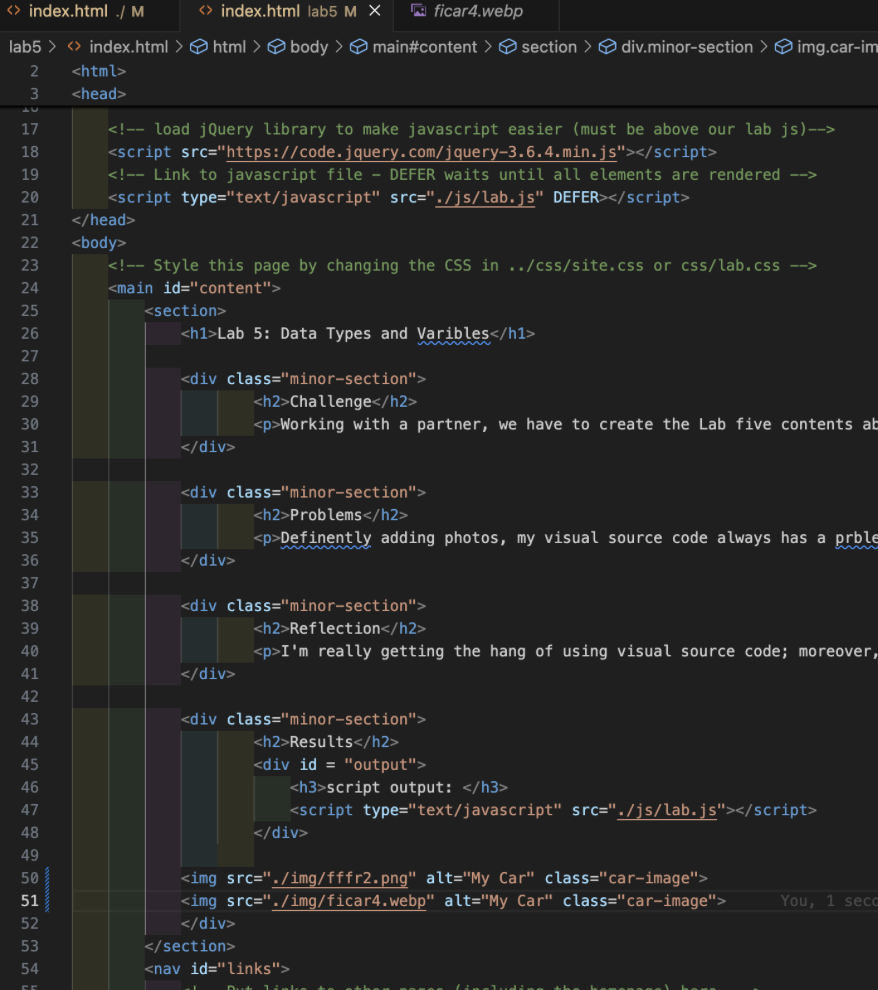
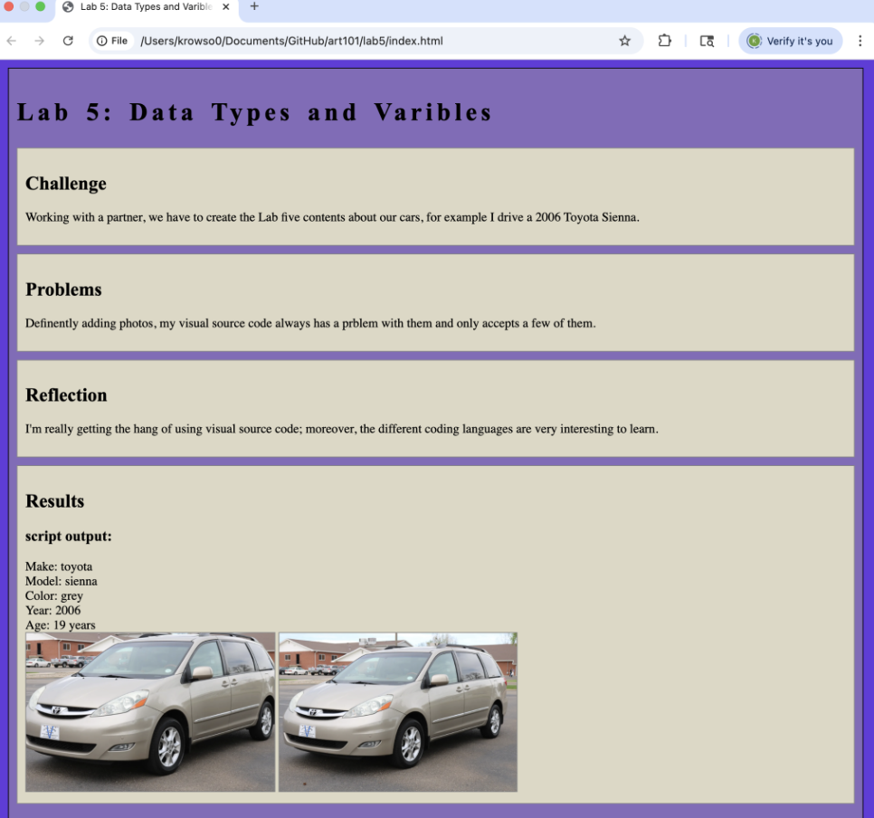
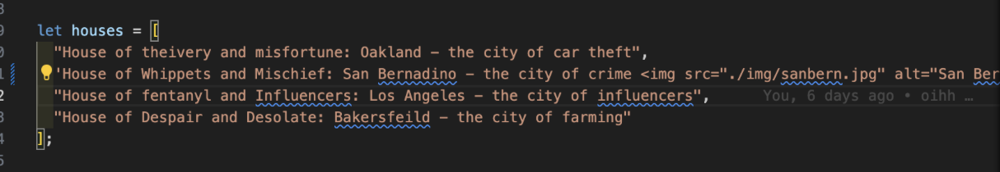
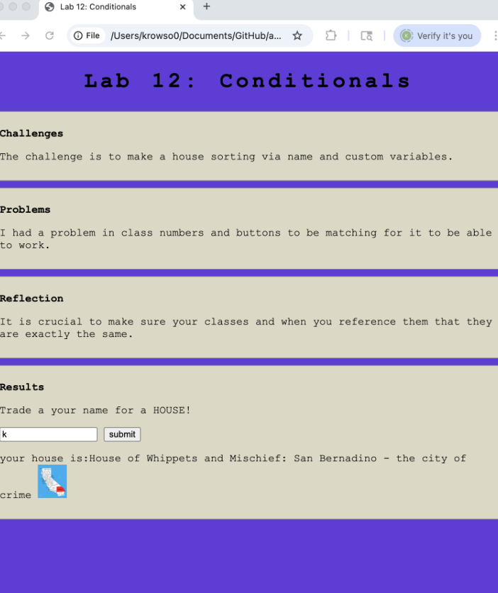

Debugging Tools & Stratigies
Challenges
Debug previous labs.
Problems
finding bugs to debug was hard, because my lab partner is really good at coding.
Reflection
the debug tool is fairly useful, i used it break apart code section by section to see what was working where.
Results
My code now works, check lab 5 & 12
Debugging
Lab 5 & Lab 12
Kalani’s Lab 5: The main issue when referring to the images was the name of the file being mismatched with the image pull. Img src=”(this should contain the exact image name)” My mistake was writing the title of a totally unrelated image, so when I tried to push the image to the website it would not show up. The fix was to look at my img folder and reference the correct image in the HTML.
HTML lab 5:
Local Lab:
The problem was that San Bernardino’s image wasn’t showing up, which was the same problem once again of misspelling certain keywords. When referring to the image, usually you would start out with .img/”image.” In this case, I spelt out the whole image, instead of IMG, which made my code show no picture when asked to. The fix was just swapping the image with img and making sure it started with a period (./img).
HTML lab 5:
Local Lab:
